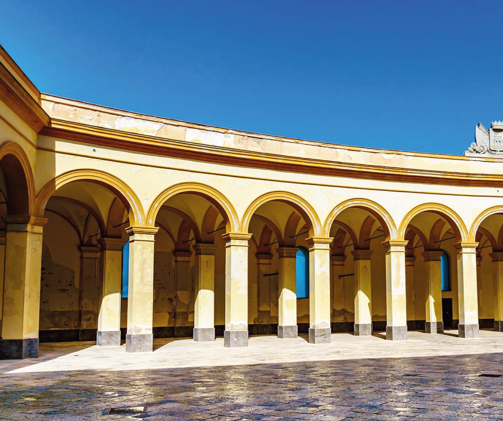
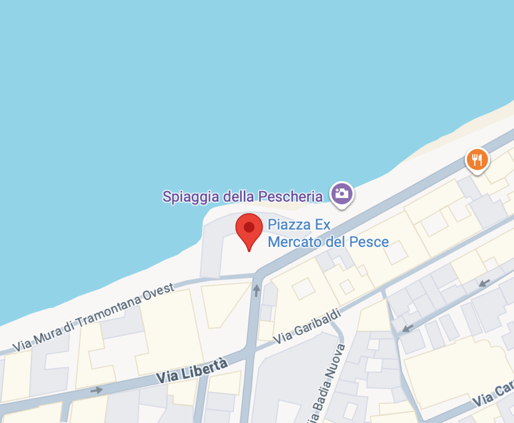

Trapani es una ciudad costera que combina historia, mar y tradiciones ancestrales. Sus calles estrechas y casas de tonos ocres recuerdan épocas medievales, mientras que el puerto antiguo sigue latiendo con la actividad pesquera que ha definido la ciudad durante siglos. Caminar por Trapani es sentir la brisa marina mezclada con el aroma de sal y pescado fresco.
PIAZZA MERCATO DEL PESCE


Piazza Mercato del Pesce es una plaza semicircular abierta al mar que resume la historia marítima de Trapani. En el pasado formó parte del sistema defensivo de la ciudad frente a los ataques piratas y fue un espacio clave para el comercio del pescado, la sal y el coral. En su centro se alza una estatua de Venus Anadiomena, vinculada al mito fundacional de la ciudad, según el cual Trapani nació de la hoz caída de la diosa Ceres, reforzando la conexión entre la plaza, el mar y la economía local.
PUERTO Y VER EL ATARDECER
Un paseo por el puerto al atardecer permite contemplar la majestuosidad del mar Tirreno y los barcos pesqueros que regresan cargados de la pesca del día. Además, Trapani es punto de partida para visitar las islas Egadi y la cercana ciudad de Erice, con su castillo medieval que domina la llanura desde la cima de la colina.